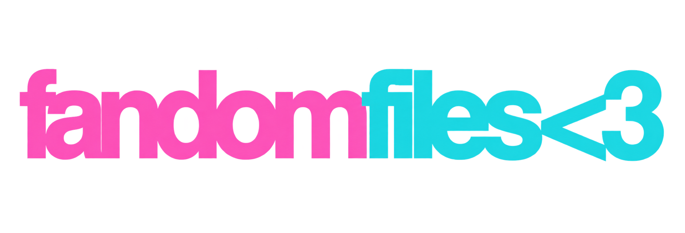

The Fandom Files is an independent publication about music, fandom, fashion, creators, and internet memory—with timelines, moodboards, saved stories, and daily games. You don’t have to know everything to belong here.
A fresh selection arrives every day at midnight Eastern time, with the same questions for everyone and automatic daylight saving adjustments. Your progress is saved in this browser. The main quiz has ten questions. The Lost Post gives you four clues to recover a reference in three guesses. Your Sideblog collects receipts, stamps, and themes. Browse interactive era folders, including a free sample in each era, or play the classic five-question remixes. The main quiz and Anonymous Ask are always free. Try all three eras for 24 hours, then unlock them for $5 once. Purchases follow your email account. Approved themed issues pair the quiz with its ask.
The Anonymous Ask is a daily mystery reference: type a guess, or pass for a clearer clue. You have six turns, and a wrong guess uses a turn too. Finish any game to stamp your reading diary and build a daily streak. Your diary and progress stay in this browser.
Little chimes are made from scratch, and you can mute them anytime. No celebrity clips or licensed songs. Activity counts stay on your device; there’s no public leaderboard.
The Fandom Files is an independent fan-culture publication, not affiliated with any featured artist, creator, or platform.